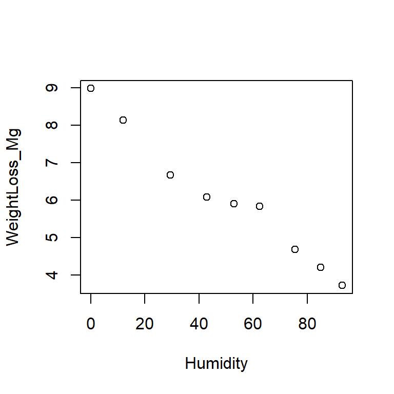
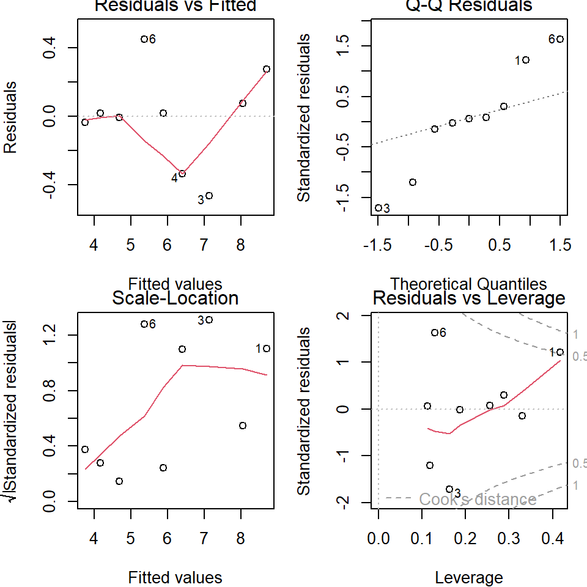

General linear models are a key member of the generalized linear modelling (GLM) family and they are among the most widely used models in the marine science literature, particularly biology. This course focuses on two subsets of linear models: ANOVA and regression. ANOVA and regression are typically used for different data modelling scenarios: ANOVA when the predictor is categorical and regression when the predictor is continuous.
5.1 Analysis of variance (ANOVA)
ANOVA is a method to compare means among groups and put confidence intervals on the differences between those means. For a predictor with only two categories, ANOVA is identical to the two-sample t-test, so we’ll just use ANOVA.
When you see “analysis of variance”, think “analysis of means”. The variance in the data is partitioned in different ways to draw conclusions about the means.
In an ANOVA, we compare the means of different groups by analyzing the variance (Figure 5.1). The variance is partitioned into 1) the mean variance between treatment means and the overall mean (thick arrows), and 2) the mean variance within treatments (thin arrows). By comparing the magnitude of these two quantities, we draw conclusions about whether the difference between group means is plausibly due to noise or not.
Figure 5.1: Sources of variation (within group vs. among groups) as quantified by ANOVA. Points are observations, dashed vertical lines give sample means for A (blue), B (red), and overall (black). Thick arrows show differences between group means and the overall mean, and thin arrows show differences between observations and group means. The population means (mu[A], mu[B]) and the effect size (mu[B] - mu[A]) are unknown and must be inferred from the sample with confidence intervals.
The null hypothesis in an ANOVA is that there is no difference in group means: \(\mu_A = \mu_B = ... = \mu_k\). Under the null hypothesis, the data come from a single population and our groupings are meaningless with regard to the response variable.
In some cases, this may be of interest. What is almost always more interesting, however, is estimating means, differences between means, and our confidence in those.
There are numerous variations on the theme of ANOVA. We cover one-way ANOVA and we mention two-way ANOVA. The objective of ANOVA is to establish the size of the difference (called the ‘effect size’) between different groups (e.g., treatments or locations) and put a confidence interval on those differences.
5.1.2 One-way ANOVA
One-way ANOVA is a procedure we use to estimate the magnitude of differences between means of two or more groups. We also use it to put confidence intervals on those differences.
The first example data is the yield in \(\mu g ~ C ~ ml^{-1}\) of a species of microalgae (Isochrysis galbana) in laboratory culture exposed to three light levels (low, medium, high). We are interested in these particular light levels because they represent the means of winter, spring, and summer Scottish sun intensity. The data are in the worksheet ‘Microalgae’.
What is your objective in this type of experiment? What are you interested in estimating?
Q. 5.2
What assumptions should be met prior to undertaking parametric ANOVA?
Q. 5.3
Under which circumstances could you begin to relax the assumption that the data are normally distributed (think central limit theorem)?
Q. 5.4
What is the sample size in this case? Can we assume sample means will be normally distributed?
Q. 5.5
Are the data normally distributed? Be careful how you word your answer to this question.
Q. 5.6
Is it reasonable to assume that these data are drawn from a population that is normally distributed?
To work with our data, we need to rearrange the data.frame to a tidy format with each variable corresponding to one column, and each observation corresponding to one row. We’ll use the tidyverse as before.
What do you notice about the variable types? Prepare algae_df$Treatment for analysis and plotting.
View solution
The column should be a factor with the levels in a logical order. Remember that unless you specify the levels, R will order them alphabetically. In this case, that would be "high", "low", "medium".
Figure 5.2: Boxplot of algal yield at different light levels.
While there are formal tests to evaluate model assumptions (e.g., the Shapiro-Wilkes test or the Bartlett test), a better way of checking model assumptions is to investigate the residual error. Residual error is the difference between the actual data values and the values predicted by the model. Here we have randomly assigned five cultures each of the same species to three specific treatments (light levels).
Residual error is the leftover noise: the difference between your model prediction and each observation.
Sampling error is the error due to the sampling process: the difference between your model prediction and the true population value.
Next to conduct the analysis. This is a one-way ANOVA (one predictor) with fixed effects (we are interested in the differences between specific groups rather than characterizing the variation among groups generally).
algae_aov<-aov(Yield~Treatment, data =algae_df)# ?aov
The function to conduct an ANOVA is aov(). The function anova() converts various statistical model outputs to the standard ANOVA-table output, including any from the GLM family. An ANOVA table can be produced with aov(...) or anova(lm(...)), but post-hoc analysis requires aov().
Before we look at the output, let’s assess the assumptions using the residuals. Rather than using qqnorm() as in Chapter 3, it is better to use plot(aov_object). These default residual plots (Figure 5.3) enable us to rapidly assess whether the model assumptions are reasonable. Remember, the assumptions to assess here are:
The residual error is normally distributed (rather than variable per se, which is what qqnorm() gives).
The residual error is homoscedastic, with constant variance across groups.
Upper left: Residuals v. fitted. This is the residual values against the fitted values. The fitted values are the means of the three groups (remember that ANOVA is about comparing means). The spread for the lower values (low and medium light) is higher than for the high light so this might make us consider the homoscedasticity assumption.
Upper right: Normal Q-Q plot. This assesses the normality assumption. The points (each point is an observation) lie around the straight line so this assumption is reasonable. Note that general linear models assume that the means of groups are normally distributed, and this always applies when the means are based on large sample sizes (roughly \(n > 30\)). When \(n < 30\), you should check that the distribution of the residuals is reasonably ‘normal’.
Lower left: Scale-location. This specifically looks to assess whether residual magnitude increases with fitted values, which is a common issue in these types of analyses. In this case, the scale decreases with fitted value. This is similar to the Upper Left plot, but with sqrt(abs(standardized_residuals)) on the y-axis instead of just residuals to focus just on the magnitude of the residuals.
Lower right: Constant leverage, residuals vs. factor levels. This indicates how each treatment is fitted (i.e. the residuals associated with each treatment). You might be concerned if one particular treatment was associated with extremely high residuals (outliers). R automatically identifies potential outliers (8, 11, and 13 in this case) for you to further assess. In this case there is nothing in particular to worry about.
The residual plots allow you to investigate different aspects of the data and the how their assumptions are met. The interpretation of the plots overlaps in the sense that the same issue might be apparent in several of the plots.
Q. 5.8
What are the ‘fitted values’ for an ANOVA?
Q. 5.9
Are your effects fixed or random?
Everything looks OK, so we can then look at the results of the ANOVA.
# anova(algae_aov) # outputs an anova-type table, but unnecessary with aov()summary(algae_aov)
Df Sum Sq Mean Sq F value Pr(>F)
Treatment 2 10.050 5.025 6.487 0.0123 *
Residuals 12 9.296 0.775
---
Signif. codes: 0 '***' 0.001 '**' 0.01 '*' 0.05 '.' 0.1 ' ' 1
Q. 5.10
Assuming you have chosen \(\alpha = 0.05\), what do you conclude? What might you be interested in going on to test next?
Reporting that there are ‘significant’ differences between means is not enough. What your readers should be interested in is what the differences between the means actually are, and how confident you are in your assessment. This can be provided by the Tukey HSD test.
# HSD stands for 'honestly significant difference'algae_grp_diffs<-TukeyHSD(x =algae_aov, conf.level =0.95)algae_grp_diffs
Tukey multiple comparisons of means
95% family-wise confidence level
Fit: aov(formula = Yield ~ Treatment, data = algae_df)
$Treatment
diff lwr upr p adj
medium-low -0.09077539 -1.5758551 1.394304 0.9854641
high-low 1.68922461 0.2041449 3.174304 0.0260570
high-medium 1.78000000 0.2949203 3.265080 0.0194474
The mean yield under high light is significantly higher than under both low light (mean difference [95% CI]: 1.69 [0.204-3.17] \(\mu g ~ C ~ml^{-1}\); p=0.03) and medium light (1.78 [0.295-3.27] \(\mu g ~ C ~ml^{-1}\), p=0.02). There was no significant difference between low and medium light levels (p=0.99).
Q. 5.11
In the output from TukeyHSD(), why is the first value in diff negative?
We of course also want to report the group means with confidence intervals. While we could calculate these individually as in Chapter 4, the simplest way is to use the emmeans package. This has the added benefit of using our model’s assumption of homoscedasticity in calculating the standard error.
The emmeans() function can correctly calculate means and confidence intervals for complex models (?emmeans). Our model is simple, so we only need to provide our aov object and the name of the predictor variable (specs=...). The confidence level is specified with level=..., which is set to 0.95 by default.
Treatment emmean SE df lower.CL upper.CL
low 12.1 0.394 12 11.4 12.8
medium 12.0 0.394 12 11.3 12.7
high 13.8 0.394 12 13.1 14.5
Confidence level used: 0.89
5.1.3 One-way ANOVA (reprise)
Import the ‘LimpetDist’ sheet from “H2DS_practicalData.xlsx”, which gives travel distance of limpets on three different surfaces. Perform a one-way ANOVA of distance predicted by surface type. Make sure you perform appropriate data quality checks and assumption checks. Report the ANOVA table and the pairwise effect sizes with confidence intervals.
Figure 5.6: Residual plots from the limpet one-way ANOVA.
If the assumptions seem invalid, try transformations. Once satisfactory, continue.
View step 4
In this case, the residuals show that the assumptions of normally distributed residuals with homoscedasticity among groups are reasonable. No transformation is needed.
Fourth, produce the ANOVA table and evaluate the null hypothesis.
Df Sum Sq Mean Sq F value Pr(>F)
Surface 2 4478 2239.1 18.99 1.95e-05 ***
Residuals 21 2476 117.9
---
Signif. codes: 0 '***' 0.001 '**' 0.01 '*' 0.05 '.' 0.1 ' ' 1
If you failed to reject \(H_0\), report this and stop. Otherwise, continue.
View step 5
We’ve rejected the omnibus null hypothesis, so we proceed with pairwise comparisons to determine which means are different from each other, by how much, and how confident we are in that difference. We also of course calculate means for each group with CIs.
Fifth, calculate group means with CIs and perform a Tukey HSD test.
Report the results. In a full report or paper, this should include the ANOVA table, group means and CIs, effect sizes and CIs, and likely a figure communicating the results.
5.2 Regression
Correlation and regression are used to examine the strength of association between two variables. In correlation, both variables are measured (and therefore associated with measurement error). In regression, one variable is fixed (by the experimenter) and is assumed to have no ‘error’ associated with it and the other, called the ‘response variable’, is measured (so has measurement error). You must be able to distinguish whether correlation or regression analyses are most appropriate for a given research question and design.
Correlation analysis is used to measure association, where you are not attempting to formally link cause-and-effect. Regression analysis is generally used where you have experimentally manipulated the fixed factor and are looking at the response in another factor. Causation is implicit in inferential regression analysis (correlation analysis is often used in ‘exploratory’ data analysis where any link between cause-and-effect is inherently more speculative).
The media often misreport science because it is difficult to resist the impulse to attribute causation. An overwhelming number of spurious correlations (i.e., those clearly having no causal relationship) are documented on tylervigen.com.
5.2.1 Overview
Regression is at the heart of linear models. ANOVA and t-tests are, basically, special cases of linear regression models. The regression coefficient is a measure of the strength of the relationship between the dependent variable (the one you measure) and the independent variable (the one you fix like a fixed factor in ANOVA). The regression coefficient is denoted by \(R^2\) compared with \(r\) in correlation. The regression coefficient \(R^2\) ranges from 0 to 1 (unlike \(r\) which ranges from -1 to 1). A value \(R^2 = 0\) indicates no relationship to the independent variable while \(R^2=1\) indicates that the independent variable is entirely responsible for the variability in the measured variable.
As usual, null hypothesis significance testing is often applied to regression statistics. As usual, the null hypothesis being tested is usually “there is no functional relationship between the response and the predictor” and this is usually conceptually nonsense. In conducting regression analysis, your objective is to quantify to the most appropriate precision and accuracy possible the relationship between X (the aspect you control, the predictor, plotted on the X axis) and Y (the variable you measure, the response, plotted on the Y axis). Your objective is to quantify this relationship, put confidence intervals on it, and then interpret your findings in relation to the objectives of the study and in relation to other research.
Q. 5.12
What does the plot look like when there is no relationship between the predictor and the response?
Let us now consider an example in which cause and effect does exist. The data in worksheet ‘Beetles’ in practical_6.xlsx shows the weight loss in Tribolium confusum, the confused flour beetle, at different relative humidities (data from Sokal and Rohlf, 1995). The relative humidity (RH) to which the beetles are exposed can be fixed and the weight loss (via evaporative losses) of the beetles then assessed. There is no way that the null hypothesis can be true in this case: humidity will obviously influence weight loss in beetles.
Q. 5.13
In this case, what is your response variable (what are you measuring) and your predictor (i.e. what is it that you are manipulating to determine the extent of the response)?
Q. 5.14
Plot the data in R and check your prediction. In this case, the predictor must be displayed on the x-axis and the response must be on the y-axis.
We are interested in whether the whole data set can be usefully represented by a linear regression relationship. We wish to estimate the relationship, and put a confidence interval on our estimate. Common sense tells us that there is some sort of relationship (testing a null hypothesis is not very useful) but it might go in either direction (positive or negative) and we don’t know the strength (i.e. slope) of that relationship.
5.2.2 Linear regression in R
In R we can use a variety of techniques to conduct linear regression. The easiest is to use lm(). It is worth noting that lm() would also work for all your other general linear models (e.g. ANOVA). They are, in fact, the same model, it is just the default output (and necessary input formatting) that differs. Try reproducing the ANOVAs above with anova(lm(...)).
Import data and begin:
beetle_df<-read_excel("data/H2DS_practicalData.xlsx", sheet ="Beetles")# inspect the dataframe, then make a scatter plotpar(mfrow=c(1,1))plot(WeightLoss_Mg~Humidity, data =beetle_df)

Figure 5.8: Beetle weight loss as a function of relative humidity.
An aside on plotting: you can provide plot() with either a vector for the x-axis and a vector for the y-axis (i.e., plot(x_var, y_var)) or you can use a formula, specifying the dataframe (i.e., plot(y ~ x, data=data_df)). Just be aware of which variable is on which axis.
Now we have explored and plotted the data we can conduct the regression analysis.
# weight loss is modelled as (~) a function of humiditybeetle_lm<-lm(WeightLoss_Mg~Humidity, data =beetle_df)# beetle_lm# str(beetle_lm) # lm outputs are complex structures
Before we go on and interpret the model output we need to assess the model assumptions. This is done in the same way as for ANOVA with the same commands.
par(mfrow =c(2, 2), mar=c(4,4,1,1))# set up 4 in 1 plot.plot(beetle_lm)# plot the regression residuals.

Figure 5.9: Regression diagnostics
The small sample size here (\(n=9\)) makes a proper analysis of the residuals difficult. The plot should be assessed in the same way as for the ANOVA residuals. Basically, any pattern is bad. The upper left (Residuals v Fitted) doesn’t cause any major concern, though the upper right (Normal QQ) indicates a possible problem. Scale-Location (lower left) is difficult to interpret but no obvious pattern is present. The Residuals v. leverage (lower right) indicates a potential issue as well. A point with a large residual (i.e. where it is very different to that expected by the model) and with a high leverage (i.e. at the extreme ends of the predictors range) has a large Cook’s distance and has a disproportionate effect on the slope and intercept. These points should be examined in more detail.
Q. 5.15
Which point has the largest Cook’s distance?
We will now proceed to looking at the linear regression analysis results on the basis that the residuals do not raise any concerns.
Call:
lm(formula = WeightLoss_Mg ~ Humidity, data = beetle_df)
Residuals:
Min 1Q Median 3Q Max
-0.46397 -0.03437 0.01675 0.07464 0.45236
Coefficients:
Estimate Std. Error t value Pr(>|t|)
(Intercept) 8.704027 0.191565 45.44 6.54e-10 ***
Humidity -0.053222 0.003256 -16.35 7.82e-07 ***
---
Signif. codes: 0 '***' 0.001 '**' 0.01 '*' 0.05 '.' 0.1 ' ' 1
Residual standard error: 0.2967 on 7 degrees of freedom
Multiple R-squared: 0.9745, Adjusted R-squared: 0.9708
F-statistic: 267.2 on 1 and 7 DF, p-value: 7.816e-07
The regression equation of the form \(y = a + bx\) can be determined. The regression equation is:
\(WeightLoss = 8.70 - 0.05322 * humidity\)
Common-sense check: the coefficient is negative. As the humidity increases, the weight loss decreases (as expected and shown in the scatter plot).
Q. 5.16
What is the effect on weight loss of increasing the relative humidity by 10%?
Q. 5.17
What is the weight loss, predicted by the model, when relative humidity is 0%?
Q. 5.18
What does the model suggest the weight loss will be when relative humidity is -50% and +150%? Are these values sensible? What does this tell you about extrapolating beyond the data range in using regression analysis in predictions?
The residual error is the variance in y around the line. The \(R^2\) is the proportion of this variance that is explained by the regression line. In the current case \(R^2 = 0.97\). This is an extremely high value and indicates that the regression model is extraordinarily good at accounting for the variance in weight loss based on the relative humidity.
The P values allow us to assess if the slope and the intercept are likely different from zero.
Q. 5.19
Given the very high \(R^2\) (and looking at your plot) would you expect the regression model to be significantly better than the null model in explaining the variance in weight loss?
Q. 5.20
With \(\alpha = 0.05\), do you reject or accept the null hypothesis? What would you wish to report in relation to the slope coefficient if you were reporting the results from this analysis?
The confidence intervals are, again, ‘clunky’ to describe.
If we imagine there were many alternate you’s (like in a multiverse) repeating the same experiment on the same population with the same sample size (but independent samples), and each ‘you’ calculated 95% CIs with confint(), then 95% of you would have intervals that include the true population intercept and slope. While you do not know if you are in the unlucky 5% that failed to capture the population values, the 95% confidence interval serves as our best estimate for likely values (but see Bayesian statistics for more intuitive intervals!).
5.2.3 Plotting the regression line and confidence intervals
A regression model (i.e. the linear relationship between the predictor and response variables) allows us to predict values for any value of the predictor, along with confidence levels. We can plot this regression line without too much effort.
Figure 5.10: Regression line (solid) with upper and lower 95% confidence intervals on the regression line (dashed).
Try generating 90% confidence intervals and add them to the plot.
Q. 5.21
Which will have the wider interval, a 99.99% interval or a 50% interval and why?
Q. 5.22
Do the confidence intervals in Figure 5.10 run parallel to the regression line?
Q. 5.23
If not, what does this suggest about the degree of confidence you have in values predicted at various points along the line?
Q. 5.24
At what value of relative humidity are your predictions of weight loss likely most accurate?
We can make predictions based on our regression line, and put confidence intervals on those predictions. Say we had a relative humidity of 50% in the above example. You could ask for the model-predicted weight loss and you’d want confidence intervals on that prediction.
# predict() needs a data.frame with the same predictors used in beetle_lmpredict(beetle_lm, newdata =data.frame(Humidity =50), interval ="predict", level =0.95)
fit lwr upr
1 6.04292 5.303471 6.782368
# or more fully:predict(beetle_lm, newdata =data.frame(Humidity =seq(0, 100, by=25)), interval ="predict", level =0.95)
Figure 5.11: Regression line (solid) with upper and lower 95% confidence intervals on the regression line (dashed) and 95% prediction intervals (dotted).
These are prediction intervals and they are broader than confidence intervals. The confidence intervals express your confidence about the regression line for the population. The prediction interval expresses your confidence about the distribution of the observations for the population.
5.2.4 Regression (reprise)
Import the ‘PhosphateCalibration’ sheet from “H2DS_practicalData.xlsx” (1st year practical data) into R and perform a linear regression with absorbance predicted by concentration. Perform all appropriate checks for data quality and assumptions. Report relevant parameter estimates with 92% confidence intervals.
Figure 5.14: Phosphate calibration scatter plot with best fit line and 92% confidence intervals.
Report the results. In a full report or paper, this should include the intercept and slope with CIs, p-value, R2, and likely a figure communicating the results.
This is the workflow for performing a linear regression.
Most often, researchers report 95% CIs, but occasionally 80%, 90%, or 95%. It would be a bit cheeky to report the 92% CIs, but keep in mind that there is nothing magic about 95% (just like 0.05).
Q. 5.25
For a concentration of 0.75 units, what values would you expect (95 times in 100) to see from your experimental set-up?
You should get:
fit lwr upr
1 0.01988519 0.005298129 0.03447225
5.3 Conclusions
Correlation is a measure of association between two variables. It is appropriate to use correlation to measure this association when one cannot or does not wish to assume that any relationship is causative. Pearson correlation coefficients should only be used where it is fair to assume (by looking at scatter plot) that the relationship is approximately linear. Where linearity does not apply, attempt to transform one or both of the variables. Where there are outliers (that cannot be removed) or where one is uncertain about some of the data, then non-parametric ranked based correlation coefficients, such as the Spearman coefficient, should be used. As with GLMs, correlation analysis assumes that all points are independent of each other.
Linear regression is one of the most widely used statistical techniques. It is used to examine causal relationships, often where experimental manipulations are conducted. Regression is a general linear model and it lies within the generalized linear model family (GLMs). GLMs allow you to model data that is not normally distributed, including proportions (bounded by 0 and 1), or counts (bounded by 0). Using a GLM is a much better way of analyzing these data compared with transforming the response variable or using non-parametric techniques. All members of the GLM family make the assumptions that measurements are independent of each other. Where this assumption fails you can use generalized linear mixed models (GLMMs). Extensions of simple linear regression include multiple regression which examines the influence of two or more continuous variables on a response variable.